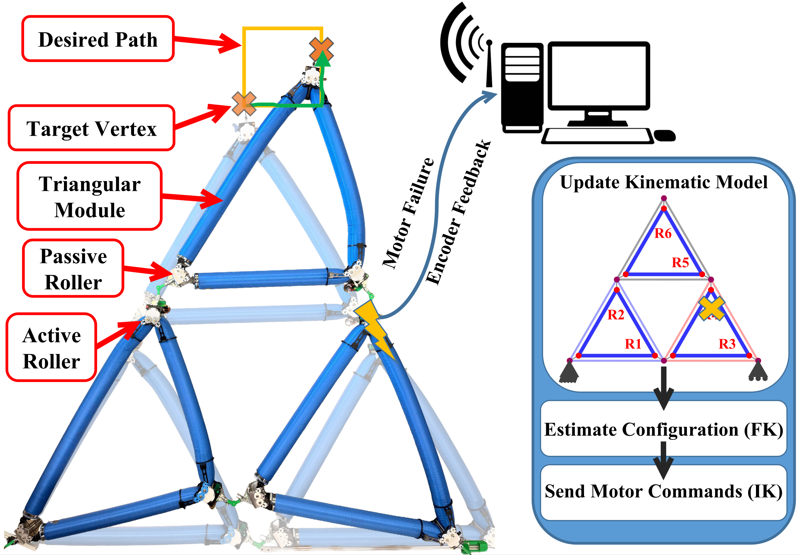
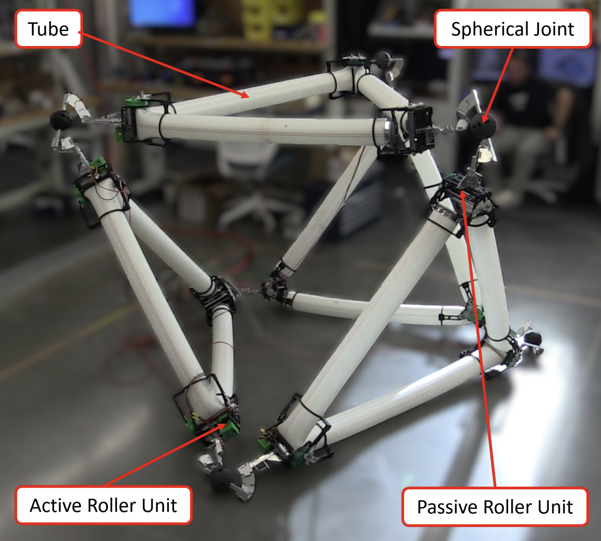
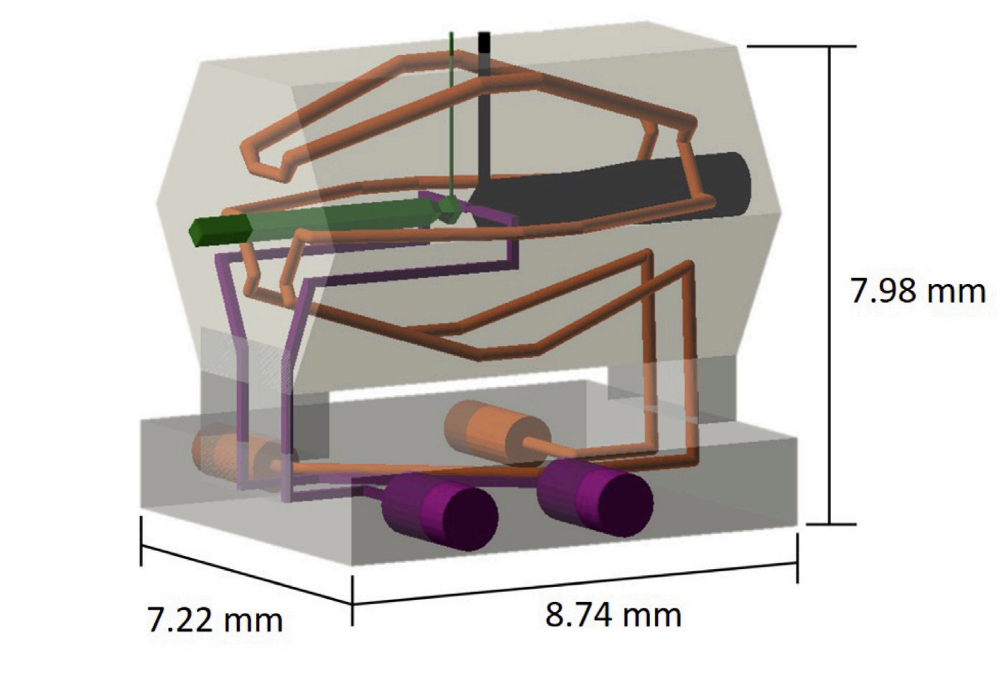
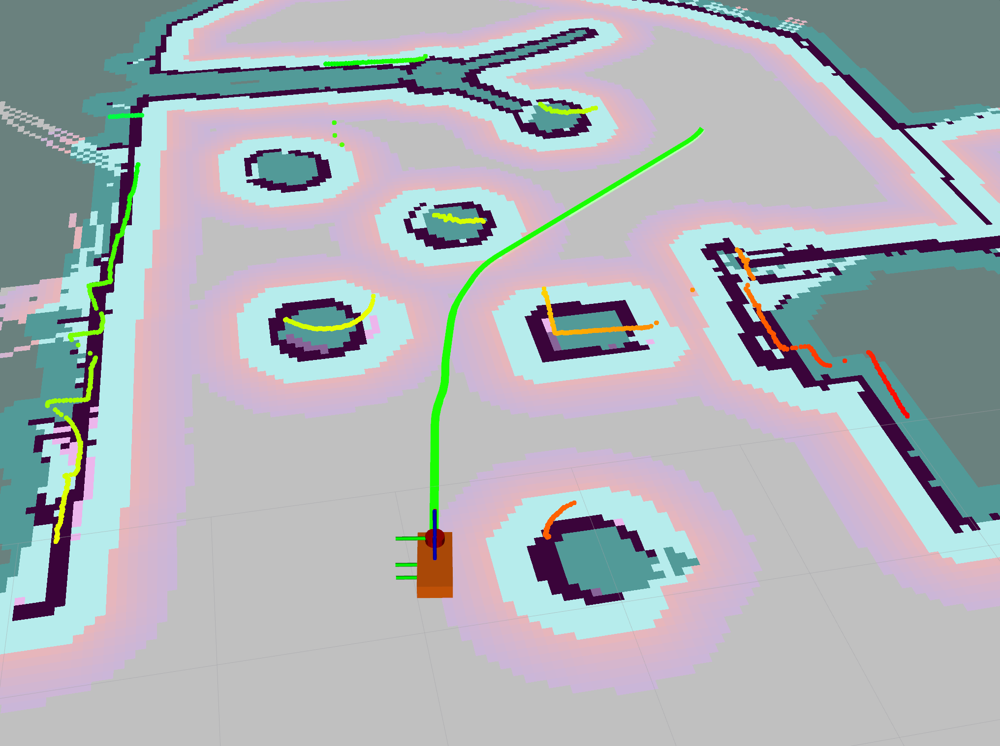
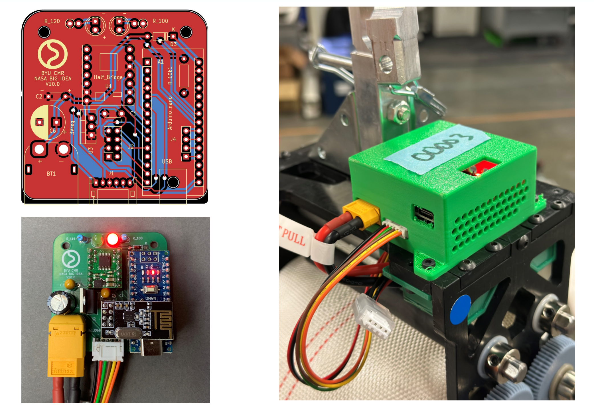
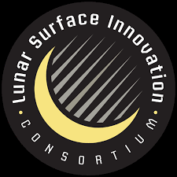
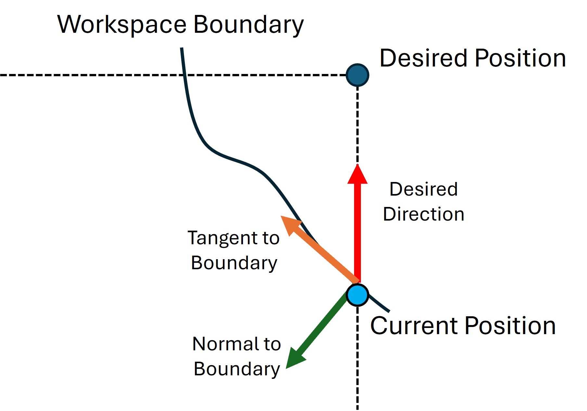

For detailed research project descriptions, visit the Research Page
Publications

James Wade, Isaac Weaver, Mihai Stanciu, Nathan Usevitch. IEEE Robotics and Automation Letters, 2026. DOI: 10.1109/LRA.2026.3733614.

Mihai Stanciu, Isaac Weaver, Adam Rose, James Wade, et al. Resubmission prepared for IEEE Transactions on Mechatronics.

Derek Sanchez, Robert Macdonald, Brendan Mitchell, James Wade, et al. International Journal of Heat and Mass Transfer, 2025.
Presentations
James Wade, Oral presentation at the Utah NASA Space Grant Consortium Symposium, May 2025.

James Wade, Poster presented at the Sandia New Mexico SIP Intern Symposium, August 2025.

James Wade, Chris Paul, Mihai Stanciu, et al. Finalists in the 2024 NASA BIG Idea Challenge - Inflatable Systems for Lunar Operations. Technical paper presented at the NASA BIG Idea Symposium, November 2024.

James Wade, Chris Paul, Mihai Stanciu, et al. Poster and Lightning Talk presented at the Lunar Surface Innovation Consortium (LSIC), November 2024.
James Wade, Chris Paul. Presented research at the Utah Conference on Undergraduate Research (UCUR), February 2024. Announcement of our NASA grant.
Proposals

James Wade. Submitted to the 2025 Utah NASA Space Grant Consortium Fellowship Program. Awarded a $2,000 fellowship to support fault-tolerant robotic truss research.